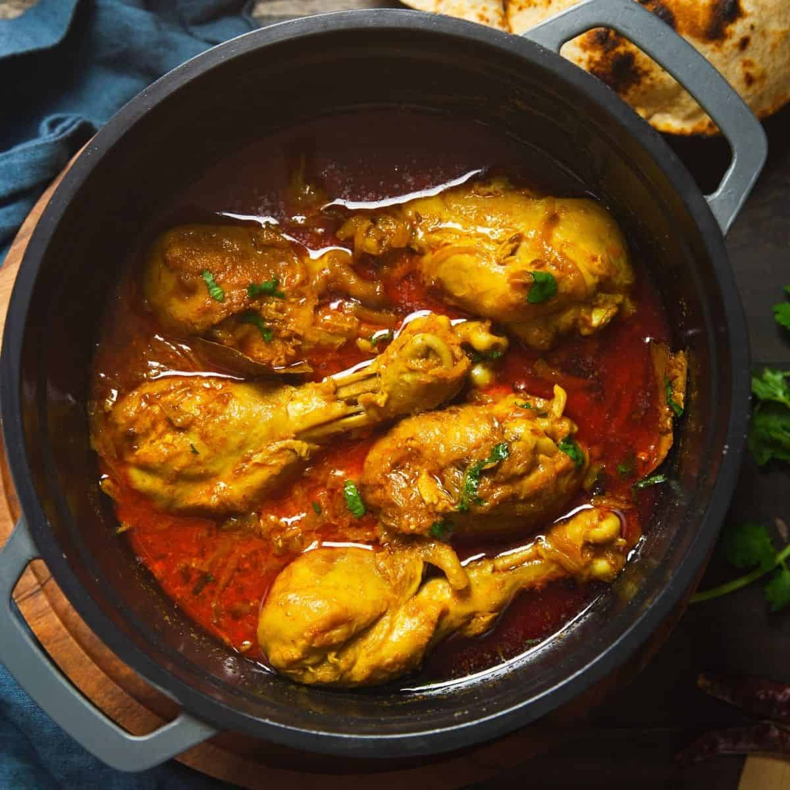

LOCAL CHICKEN CURRY

WHAT IS CHICKEN CURRY
Chicken Curry is a flavorful and aromatic dish that brings together tender pieces of chicken simmered in a rich, creamy sauce.
The curry is infused with a blend of spices including curry powder, cinnamon, and paprika, which create a warm and inviting aroma.
The addition of fresh ginger and garlic adds a zesty kick, while the coconut milk and yogurt provide a luscious, creamy texture.
A hint of lemon juice and cayenne pepper gives the dish a perfect balance of tanginess and heat.
This comforting curry is best enjoyed over a bed of fluffy basmati rice or with warm naan bread, making it a delightful meal for any occasion.
INGREDIENTS
- 3 tablespoons olive oil
- 1 small onion, chopped
- 2 cloves garlic, minced
- 3 tablespoons curry powder
- 1 teaspoon ground cinnamon
- 1 teaspoon paprika
- 1 bay leaf
- ½ teaspoon grated fresh ginger root
- ½ teaspoon white sugar
- Salt to taste
- 2 skinless, boneless chicken breast halves, cut into bite-size pieces
- 1 tablespoon tomato paste
- 1 cup plain yogurt
- ¾ cup coconut milk
- ½ lemon, juiced
- ½ teaspoon cayenne pepper
STEPS
- In a large skillet, heat the olive oil over medium heat. Add the chopped onion and sauté until lightly browned.
- Stir in the minced garlic, curry powder, ground cinnamon, paprika, bay leaf, grated ginger, white sugar, and salt. Cook for about 1-2 minutes until fragrant.
- Add the chicken pieces to the skillet and cook until they are no longer pink on the outside.
- Stir in the tomato paste, yogurt, and coconut milk. Bring the mixture to a boil, then reduce the heat and let it simmer for about 20-25 minutes, or until
the chicken is cooked through and the sauce has thickened.
- Remove the bay leaf and stir in the lemon juice and cayenne pepper. Simmer for an additional 5 minutes.
- Serve the chicken curry hot over freshly cooked basmati or jasmine rice. Enjoy with naan or chapati on the side.
Top
Back to Recipes